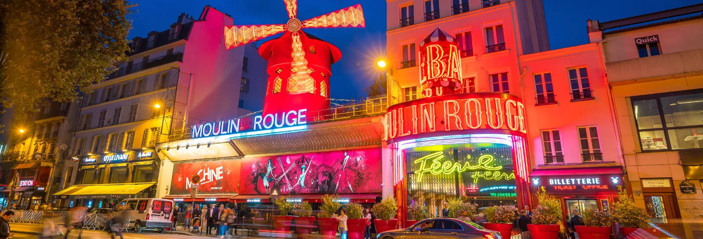
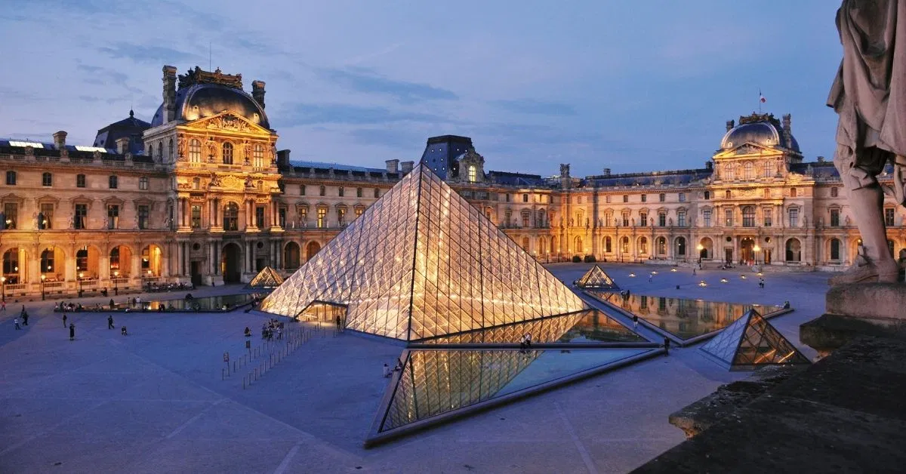
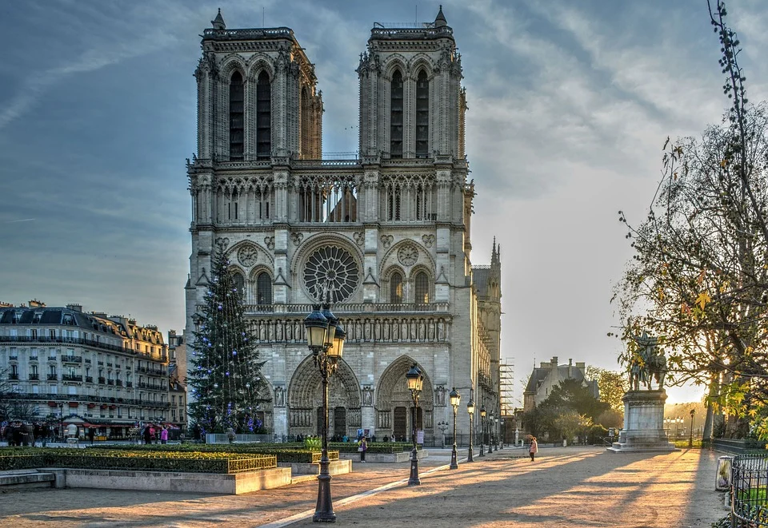
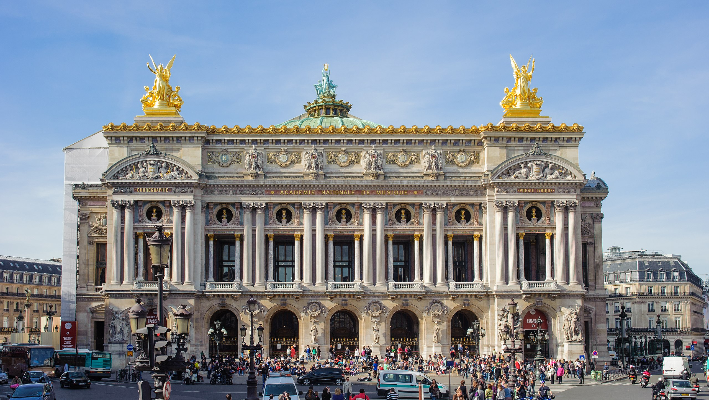

Symbole de Paris et plus largement de la France, la tour Eiffel fut construite par Gustave Eiffel à l’occasion de l’Exposition universelle de 1889. Elle fait partie des monuments les plus visités au monde.
Le plus célèbre cabaret du monde ! Depuis 1889, le Moulin Rouge immortalisé par Toulouse-Lautrec et berceau du music-hall avec la célèbre Mistinguett fait rêver le monde entier ! Édith Piaf, Liza Minnelli ou encore Frank Sinatra et Elton John… de nombreuses personnalités françaises et internationales sont tombées au fil du temps amoureuses de cette scène de légende. Une salle magnifique au décor Belle Époque tapissée de velours rouge, aux fresques burlesques typiques vous ouvre ses portes pour profiter d'un dîner dans la tradition de la gastronomie française élaboré par le Chef David Le Quellec...

Chaque passage dans la capitale mérite une visite du Louvre, tant le plus grand musée de Paris recèle de trésors. Il rassemble des œuvres de l’art occidental du Moyen Âge à 1848, des civilisations antiques orientales, égyptiennes, grecques, étrusques, romaines, des arts graphiques et des arts de l’Islam. De salle en salle, l’ancien palais royal dévoile ses chefs-d’oeuvre : la Joconde, Le Radeau de la Méduse, la Vénus de Milo, La Victoire de Samothrace… Au total, quelque 35 000 œuvres !

La cathédrale Notre-Dame de Paris, chef d’œuvre de l’architecture gothique, est le monument le plus visité de France. Située dans le centre historique de Paris, à l’extrémité de l’île de la Cité, sa construction débute au Moyen Âge. Les travaux ont commencé aux XIIIe et se sont terminés au XVe siècle. Les nombreux visiteurs admirent les vitraux et rosaces, les tours, la flèche et les gargouilles. Les touristes peuvent également découvrir le Trésor de Notre-Dame et tenter l’ascension des tours pour profiter d’une vue panoramique de Paris.

hef-d'oeuvre d'architecture théâtrale du XIXe siècle, le Palais Garnier, construit par Charles Garnier et inauguré en 1875, est la treizième salle d'opéra à Paris depuis la fondation de cette institution par Louis XIV en 1669. Sa construction fut décidée par Napoléon III dans le cadre des grands travaux de rénovation de la capitale menés à bien sous son ordre par le Baron Haussmann. Un monument historique ouvert aux visiteurs pendant la journée. Il présente des spectacles lyriques et chorégraphiques.
